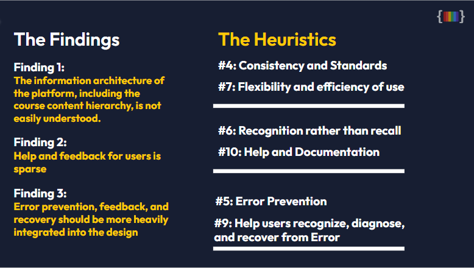

The Process
CodeSpec
A programming platform that enables inidivudals to learn how to code with the
the emphasis of IDEAS+ (Inclusion, Diversity, Equity, Accessibility, Sexual Orientation,
and gender identity and awareness).
January 2024 - April 2024
Project Overview
Codespec is an application that strives to create a more inclusive enviornment
for beginner programmers. Typically the demographics of programming are:
80.1% Male
19.9% Women
"The most common race/ethnicity for Computer programmers is White"
-DATAUSA: Computer Programmers
Our Tasks
I worked in a team of five others including me and we worked directly with our client.
Our team name was: MIKAD and the project timeline was:
Interaction Maps
As a team we created an Interaction map that allowed us to gain insights on the three main type of users of the application.
We documented the different abilities and functionalities of each user type and created a map of screenshots and arrows.
Unfortunately due to confidentiatlity that map cannot be shown.
Main User Insights:
There are three types of users for Codespec, the Learner, Researcher and Instructor.
Learner Insights
Researcher Insights:
Usability Testing
Because the platform has three main types of users we had to conduct usability testing for each user type.
Due to the different user types we decided to conduct three tests for the Learner and two tests for the
Researcher and Instructor. We conducted all of our Usability Testing over Zoom in order to record with consent and obtain
a transcript. Our reasoning for doing the amount of tests was because our client specifically wanted to know more about the User Experience for the Learner
therefore, we dedicated the majority of tests for that user type. We created separate questions that we had pre-prepared for our tests and also had the users interact with the platform.
The Learner
For the three Learner tests that we conducted, the programming experience of each individual ranged from not knowing any type of programming
to having some experience of programming. We wanted to ensure we got a diverse set of programming knowledge in order to gain better insights of user experience.
As captured above we had quite a few findings through our testing and we created recommendations based off these findings.
The Instructor/Researcher
For the two Researcher/Instructor tests that we conducted, because the functionalities of each user type were very similar we decided to group the findings and recommendations together.
The individuals that we had participate both had extensive knowledge of programming and experience teaching others how to program in order to gain the most insightful findings. As captured above
we also had findings and recommendations for our client based on our testing.
The Overall Results

In order to better navigate our findings we also combined our findings of all usability testing and mentioned our key findings and reccomendations.
Creating and Deploying a Survey
The client specifically asked for us to find insights over the user type of the Learner, therefore, we created a survey instrument in order to gage different areas of the application. The survey primarily revolves around
questions over programming experience and feelings of marginalization within the programming community. The creation of these questions not only gave us insight on target users but also helped us better understand how to better implement
IDEAS+ within the platform.
Comparative Evaluation
Our team went ahead and created a Comparative Evaluation matrix in order to gage what features seem to be reoccuring in other programming platforms. Having this information we were better able to formulate what changes and implementations might benefit the platform more.
We went ahead and compared Codespec to eight other platforms. These comparisons were either based on similar functionality of platforms or simialr content of platforms. Captured above is our analysis, findings and competitors.
Heuristic Evaluation
As our final step we conducted a Heuristic Evaluatin according to Nielsen's heuristics. Thorough this process we were able to analyze the details of the platforms and some issues that might come up for users while utilizing the platform. For the rating of each issue we followed a scale of 0-5 which is described in the attachment below.
-

Reflection of Project
Through this project and working with this client I gained a lot of insight as a researcher and designer. I was able to interact and maintain great relations with many different individuals. There were a lot of limitations in our project timeline such as gathering more diverse population samples for usability testing and surveys. However, overall we were able to analyze and conclude all of our research for each section in workpapers and present them in front of other prospective target users and for our client. This platform is a great platform and the goal of the platform to ensure that programming is a safe space for all others is one of the reasons why I love to be in UIUX.